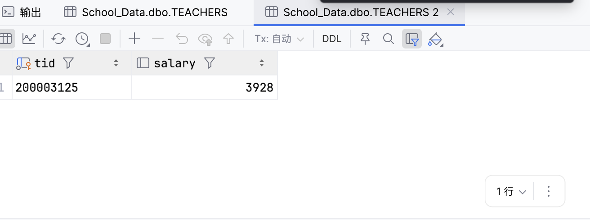
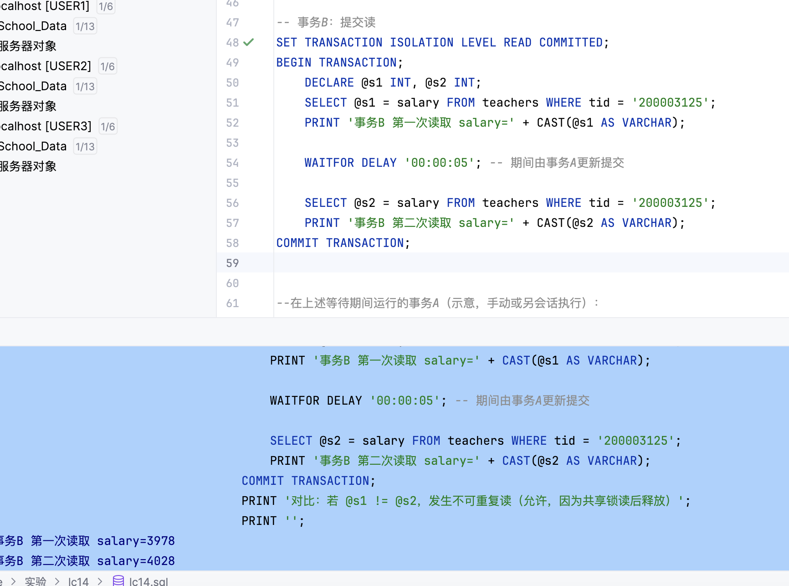
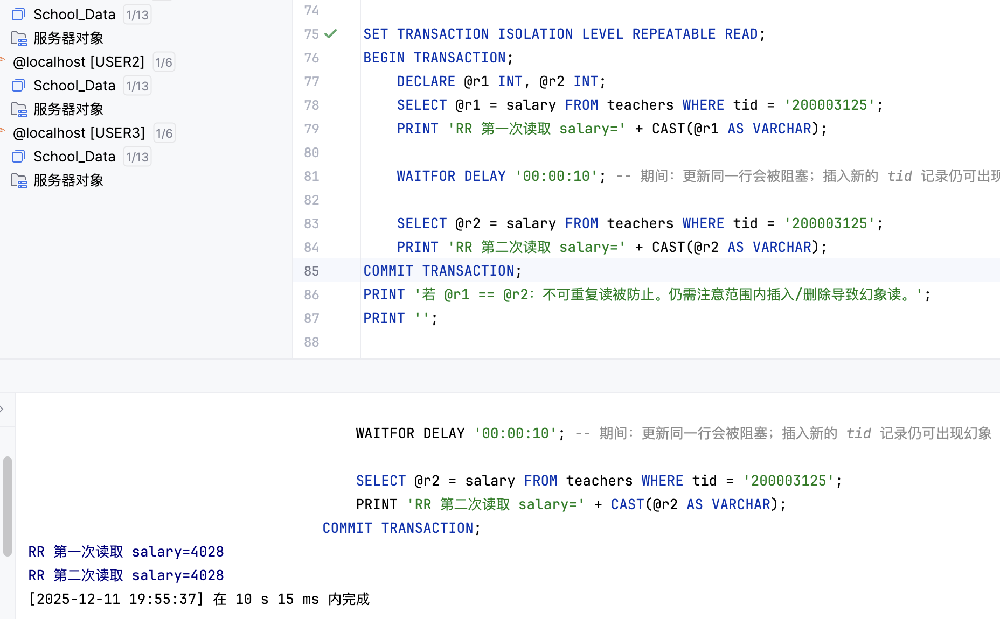
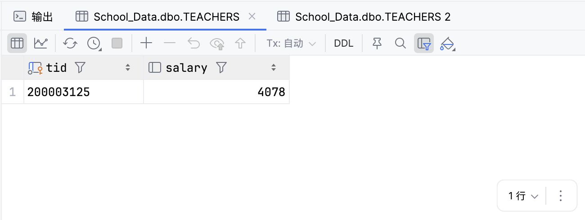
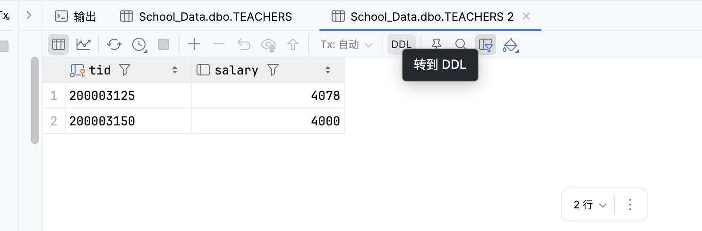
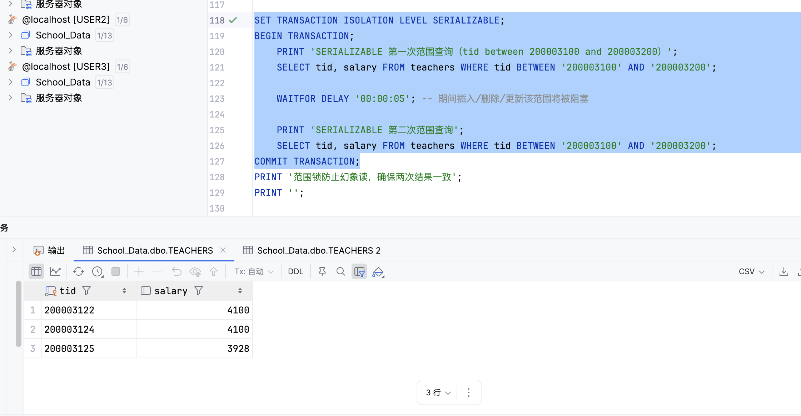
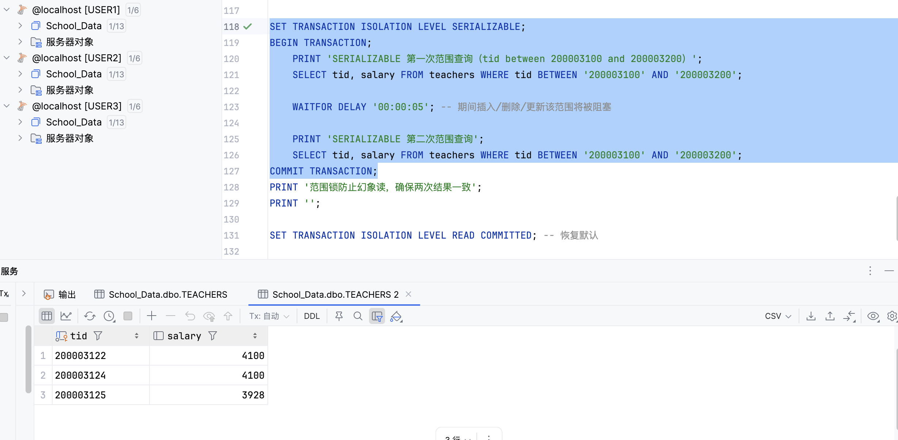
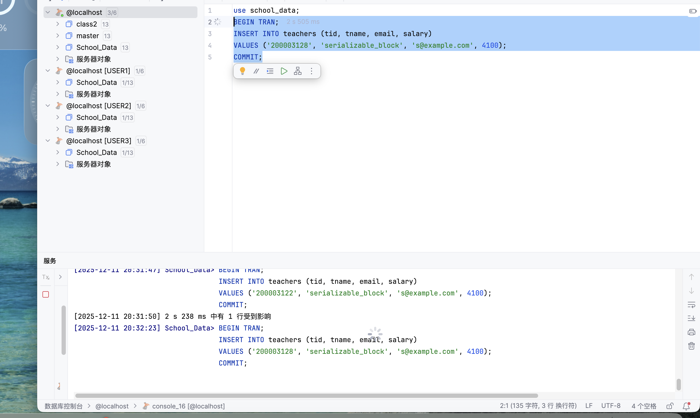
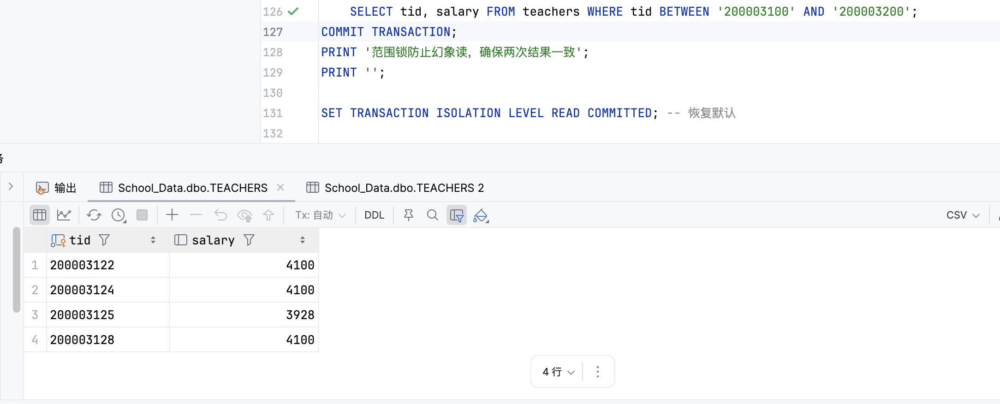

实验信息
- 实验名称: 事务隔离级别实验
- 实验日期: 2025-12-11
- 数据库: School_Data
- 实验目的: 理解不同隔离级别对并发读写的影响，观察脏读、不可重复读、幻象读及其防护
实验内容概述
本次实验主要围绕 SQL Server 中的四种事务隔离级别展开，分别是 READ UNCOMMITTED、READ COMMITTED、REPEATABLE READ 和 SERIALIZABLE。通过实际操作和观察，我们深入了解了不同隔离级别如何影响并发事务的行为，并具体观察了脏读、不可重复读和幻象读等并发问题的发生机制以及各隔离级别对这些问题的防范能力。
实验环境
- 涉及表: TEACHERS（关键字段 tid, salary）
- 关键测试行: tid = '200003125'，初始 salary ≈ 3928 / 3978 / 4028（实验中会调整）
- 并发方式: 使用两个会话 A（写）/ B（读）配合 WAITFOR DELAY 制造并发窗口
实验1：READ UNCOMMITTED（脏读）
目的
演示未提交读可以读到其他事务尚未提交、最终被回滚的数据。
过程与结果
在该实验中，事务A首先更新tid为200003125的教师工资为4200，然后通过WAITFOR DELAY延时一段时间，最后回滚事务。与此同时，事务B设置为READ UNCOMMITTED隔离级别，在事务A更新但未提交或回滚时读取salary值。从实验结果可以看到，事务B第一次读取到了4200这个并未真正提交的值，而在事务A回滚后再次读取则得到了原始值3928。这种读取到其他事务未提交数据的现象就是脏读，这也是READ UNCOMMITTED隔离级别的最大特点。


脏读的存在可能导致严重的业务问题，因为基于未提交数据所做的决策可能会因为数据的回滚而变得毫无意义甚至引发错误。
实验2：READ COMMITTED（不可重复读）
目的
READ COMMITTED作为SQL Server默认的隔离级别，能够防止脏读，但共享锁在读取后立即释放，因此仍可能出现不可重复读的问题。
过程与结果
在这个实验中，事务B采用READ COMMITTED隔离级别，对同一行数据进行两次读取，中间有一定的时间间隔。在此期间，事务A会对该行数据进行更新并提交。由于READ COMMITTED级别下共享锁在读取完成后就会释放，所以事务A能够成功更新数据。当事务B再次读取相同数据时，就得到了不同的结果。实验结果显示，事务B第一次读取salary为3978，而第二次读取则变成了4028，这正是典型的不可重复读现象。
事务B 第一次读取 salary=3978
事务B 第二次读取 salary=4028
虽然READ COMMITTED隔离级别有效避免了脏读问题，但它无法保证在同一事务内的多次读取结果一致，这对于某些需要数据一致性的应用场景来说仍然是一个隐患。
实验3：REPEATABLE READ（防不可重复读，可能幻象）
目的
验证可重复读级别能够防止同一行数据的不可重复读问题，但在此级别下仍可能出现幻象读现象。
防止不可重复读
为了验证REPEATABLE READ隔离级别对不可重复读的防范能力，我们设计了如下实验：事务B以REPEATABLE READ隔离级别对特定行进行两次读取，中间等待一段时间；与此同时，事务A尝试更新同一行数据。由于REPEATABLE READ级别会在整个事务期间持有共享锁，因此事务A的更新操作会被阻塞，直到事务B提交为止。实验结果显示，事务B两次读取的结果完全一致，证明了该隔离级别确实能够防止不可重复读问题。

幻象读演示
尽管REPEATABLE READ能够防止不可重复读，但在处理范围查询时仍可能出现幻象读。在这一部分的实验中，事务B同样使用REPEATABLE READ隔离级别，对tid在200003100到200003200之间的教师记录进行范围查询。在两次查询之间，事务A向该范围内插入一条新的记录(tid=200003150)。结果显示，事务B的第一次查询没有返回这条新记录，而第二次查询却包含了它，这就构成了幻象读现象。这是因为在REPEATABLE READ级别下，只对已存在的记录加锁，而不会阻止新记录的插入。


实验4：SERIALIZABLE（防幻象）
目的
验证可串行化隔离级别通过范围锁机制彻底阻止幻象读的发生。
过程与结果
在最后一个实验中，我们将事务B的隔离级别提升到最高的SERIALIZABLE级别，同样执行两次范围查询，查询tid在200003100到200003200之间的教师记录。与之前实验不同的是，SERIALIZABLE级别不仅会对已有记录加锁，还会对查询范围加锁，从而阻止任何在该范围内插入、删除或修改记录的操作。实验过程中，当事务B执行期间，事务A试图插入新记录的操作被阻塞，直到事务B完成并提交后才得以执行。因此，事务B两次查询的结果完全一致，没有出现幻象读现象。这充分证明了SERIALIZABLE隔离级别的强大保护能力。




当然，SERIALIZABLE隔离级别也并非完美无缺，它的高安全性是以牺牲并发性能为代价的，因为范围锁的存在会导致更多的阻塞情况，影响系统的整体吞吐量。
实验总结
隔离级别与并发问题的关系
通过这四个实验，我们可以清楚地看到不同隔离级别对各种并发问题的处理能力。READ UNCOMMITTED级别最为宽松，允许所有类型的并发问题发生，虽然性能最好但风险也最大；READ COMMITTED作为默认级别，能够在避免脏读的同时保持较好的并发性能，但无法解决不可重复读和幻象读问题；REPEATABLE READ进一步提升了数据一致性，有效防止了不可重复读，但对幻象读仍然无能为力；SERIALIZABLE则是最高级别的保护，能够彻底杜绝所有三种并发问题，但同时也带来了最大的性能开销。
锁机制的作用
各种隔离级别的实现都依赖于不同的锁机制。共享锁主要用于读操作，在READ COMMITTED级别下读完即释放，而在REPEATABLE READ及以上级别则会持续到事务结束。排他锁用于写操作，会阻塞其他读写请求直至事务完成。而SERIALIZABLE级别更是引入了范围锁的概念，通过对查询范围加锁来防止幻象读的发生。
实践体会
这次实验让我深刻认识到数据库隔离级别选择的重要性。在实际应用中，我们需要根据业务需求在数据一致性和系统性能之间做出权衡。对于金融交易等对一致性要求极高的场景，可能需要使用SERIALIZABLE级别；而对于一些对实时性要求较高但能容忍轻微不一致的场景，则可以选择较低的隔离级别。实验中使用的WAITFOR DELAY语句和双会话配合的方式，为我们观察并发行为提供了很好的手段，有助于更好地理解数据库内部的工作机制。